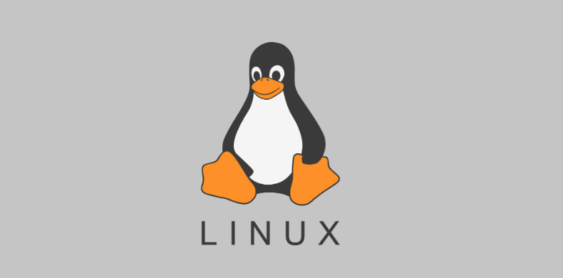
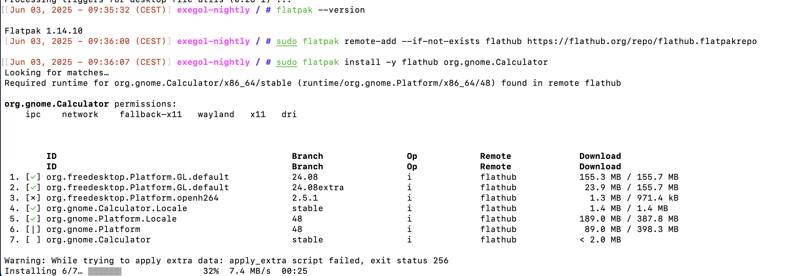
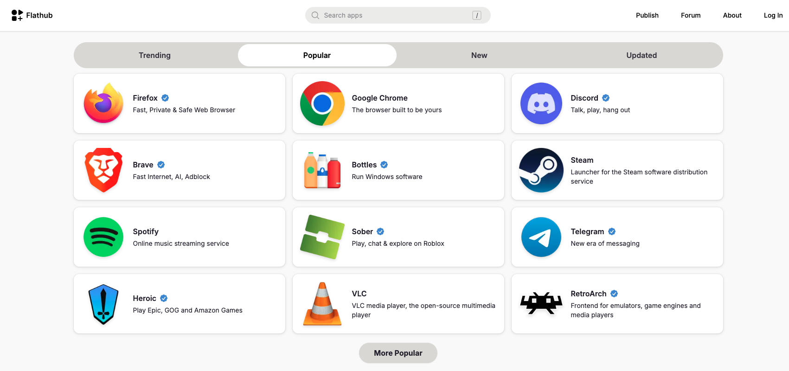
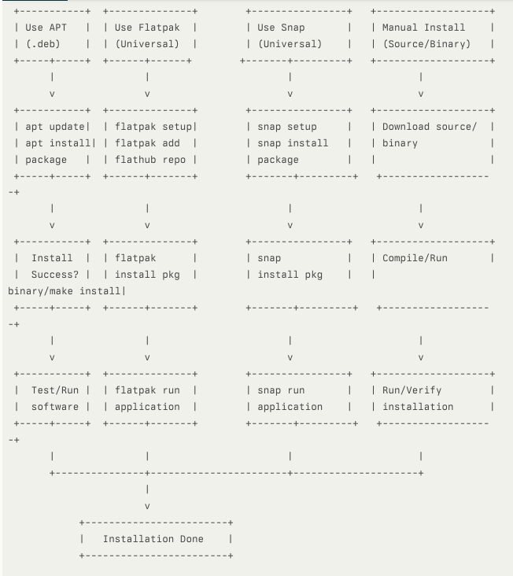

Comment installer des logiciels sous Linux ?
03 Juin 2025, 09:11 CEST
Compute
Mes conseils et préférences
Sous Linux, il existe plusieurs façons d’installer un même logiciel, ce qui peut prêter à confusion, surtout pour les débutants. Voici un guide simple pour choisir la meilleure méthode selon votre situation.
Les principales méthodes d’installation
Gestionnaire de paquets natif
Outil intégré à votre distribution (ex : APT pour Ubuntu/Debian, DNF pour Fedora, Pacman pour Arch).
Exemple :
sudo apt install firefoxGestionnaires de paquets universels
Fonctionnent sur plusieurs distributions : Flatpak, Snap, AppImage.
Avantages : applications à jour, installation facile, moins de problèmes de dépendances.

Exemple avec Flatpak :
$ flatpak install flathub org.mozilla.firefoxBinaire exécutable à télécharger
Téléchargez un fichier, décompressez et lancez-le directement.
Pratique mais moins intégré au système.
Scri pt d’installation fourni par le développeur
Parfois utilisé pour des pilotes ou outils spécifiques (ex : Nvidia CUDA).
Suivre les instructions officielles.
Compilation à partir du code source
Pour les utilisateurs avancés ou si aucune autre méthode n’est disponible.
Plus complexe, nécessite des connaissances techniques.
Quelle méthode choisir ?

Pour les applications de bureau (logiciels avec interface graphique)
Ordre de préférence :
- Gestionnaire de paquets universel (Flatpak > AppImage > Snap)
- Gestionnaire de paquets natif (APT, DNF, etc.)
- Binaire téléchargeable
- Compilation manuelle
Pourquoi ? Les gestionnaires universels offrent des applications récentes, faciles à installer et à désinstaller, et fonctionnent sur plusieurs distributions.
Pour les applications système (pilotes, outils système, environnements de bureau)
Ordre de préférence :
- Dépôt officiel du développeur
- Gestionnaire de paquets natif
- Binaire téléchargeable
- Compilation manuelle
Pourquoi ? Les applications système touchent au cœur du système. Il vaut mieux utiliser les dépôts officiels ou le gestionnaire natif pour garantir la stabilité et la facilité de maintenance.
Conseils pratiques

- Toujours vérifier les recommandations du site officiel du logiciel avant d’installer.
- Évitez la compilation manuelle sauf si vous savez ce que vous faites.
- Pour les nouveaux projets sur GitHub : s’il n’existe qu’un paquet .deb, utilisez-le avec APT sur Debian/Ubuntu. Sinon, attendez qu’une version Flatpak, Snap ou AppImage soit disponible.
- Pour les applications système, privilégiez toujours l’intégration avec le gestionnaire de paquets natif.
Résumé
Il existe plusieurs méthodes pour installer un logiciel sous Linux.
Privilégiez les gestionnaires universels pour les applications de bureau, et les gestionnaires natifs pour les applications système.
Suivez toujours les recommandations officielles pour éviter les problèmes.